Сводные таблицы
Как сделать сводную таблицу в Excel: пошаговая инструкция
Сводные таблицы – один из самых эффективных инструментов в MS Excel. С их помощью можно в считанные секунды преобразовать миллион строк данных в краткий отчет. Помимо быстрого подведения итогов, сводные таблицы позволяют буквально «на лету» изменять способ анализа путем перетаскивания полей из одной области отчета в другую.
Cводная таблица в Эксель – это также один из самых недооцененных инструментов. Большинство пользователей не подозревает, какие возможности находятся в их руках. Представим, что сводные таблицы еще не придумали. Вы работаете в компании, которая продает свою продукцию различным клиентам. Для простоты в ассортименте только 4 позиции. Продукцию регулярно покупает пара десятков клиентов, которые находятся в разных регионах. Каждая сделка заносится в базу данных и представляет отдельную строку.
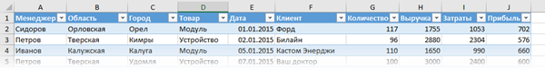Ваш директор дает указание сделать краткий отчет о продажах всех товаров по регионам (областям). Решить задачу можно следующим образом.
Вначале создадим макет таблицы, то есть шапку, состоящую из уникальных значений товаров и регионов. Сделаем копию столбца с товарами и удалим дубликаты. Затем с помощью специальной вставки транспонируем столбец в строку. Аналогично поступаем с областями, только без транспонирования. Получим шапку отчета.
Данную табличку нужно заполнить, т.е. просуммировать выручку по соответствующим товарам и регионам. Это нетрудно сделать с помощью функции СУММЕСЛИМН. Также добавим итоги. Получится сводный отчет о продажах в разрезе область-продукция.
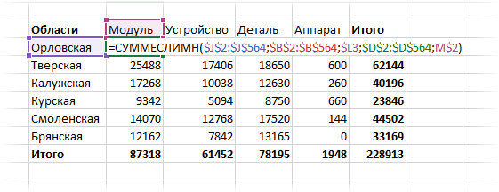Вы справились с заданием и показываете отчет директору. Посмотрев на таблицу, он генерирует сразу несколько замечательных идей:
- Можно ли отчет сделать не по выручке, а по прибыли?
- Можно ли товары показать по строкам, а регионы по столбцам?
- Можно ли такие таблицы делать для каждого менеджера в отдельности?
Даже если вы опытный пользователь Excel, на создание новых отчетов потребуется немало времени. Это уже не говоря о возможных ошибках. Однако если вы знаете, как сделать сводную таблицу в Эксель, то ответите: да, мне нужно 5 минут, возможно, меньше.
Рассмотрим, как создать сводную таблицу в Excel.
Открываем исходные данные. Сводную таблицу можно строить по обычному диапазону, но правильнее будет преобразовать его в таблицу Excel. Это сразу решит вопрос с автоматическим захватом новых данных. Выделяем любую ячейку и переходим во вкладку Вставка . Слева на ленте находятся две кнопки: Сводная таблица и Рекомендуемые сводные таблицы .
Если Вы не знаете, каким образом организовать имеющиеся данные, то можно воспользоваться командой Рекомендуемые сводные таблицы . Эксель на основании ваших данных покажет миниатюры возможных макетов.
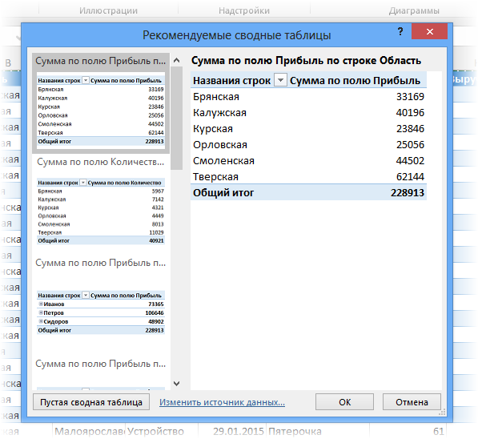Кликаете на подходящий вариант и сводная таблица готова. Остается ее только довести до ума, так как вряд ли стандартная заготовка полностью совпадет с вашими желаниями. Если же нужно построить сводную таблицу с нуля, или у вас старая версия программы, то нажимаете кнопку Сводная таблица . Появится окно, где нужно указать исходный диапазон (если активировать любую ячейку Таблицы Excel, то он определится сам) и место расположения будущей сводной таблицы (по умолчанию будет выбран новый лист).
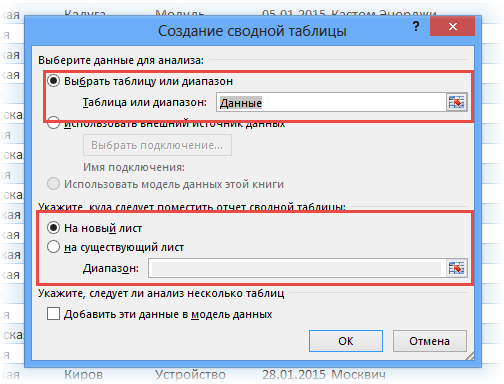Обычно ничего менять здесь не нужно. После нажатия Ок будет создан новый лист Excel с пустым макетом сводной таблицы.
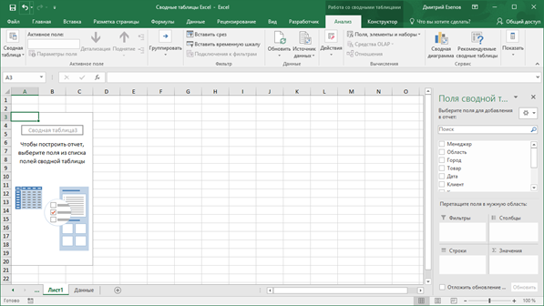Макет таблицы настраивается в панели Поля сводной таблицы , которая находится в правой части листа.
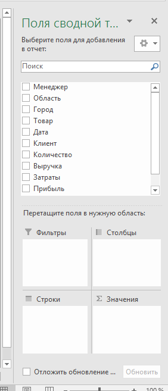В верхней части панели находится перечень всех доступных полей, то есть столбцов в исходных данных. Если в макет нужно добавить новое поле, то можно поставить галку напротив – эксель сам определит, где должно быть размещено это поле. Однако угадывает далеко не всегда, поэтому лучше перетащить мышью в нужное место макета. Удаляют поля также: снимают флажок или перетаскивают назад.
Сводная таблица состоит из 4-х областей, которые находятся в нижней части панели: значения, строки, столбцы, фильтры. Рассмотрим подробней их назначение.
Область значений – это центральная часть сводной таблицы со значениями, которые получаются путем агрегирования выбранным способом исходных данных.
В большинстве случае агрегация происходит путем Суммирования. Если все данные в выбранном поле имеют числовой формат, то Excel назначит суммирование по умолчанию. Если в исходных данных есть хотя бы одна текстовая или пустая ячейка, то вместо суммы будет подсчитываться Количество ячеек. В нашем примере каждая ячейка – это сумма всех соответствующих товаров в соответствующем регионе.
В ячейках сводной таблицы можно использовать и другие способы вычисления. Их около 20 видов (среднее, минимальное значение, доля и т.д.). Изменить способ расчета можно несколькими способами. Самый простой, это нажать правой кнопкой мыши по любой ячейке нужного поля в самой сводной таблице и выбрать другой способ агрегирования.
Область строк – названия строк, которые расположены в крайнем левом столбце. Это все уникальные значения выбранного поля (столбца). В области строк может быть несколько полей, тогда таблица получается многоуровневой. Здесь обычно размещают качественные переменные типа названий продуктов, месяцев, регионов и т.д.
Область столбцов – аналогично строкам показывает уникальные значения выбранного поля, только по столбцам. Названия столбцов – это также обычно качественный признак. Например, годы и месяцы, группы товаров.
Область фильтра – используется, как ясно из названия, для фильтрации. Например, в самом отчете показаны продукты по регионам. Нужно ограничить сводную таблицу какой-то отраслью, определенным периодом или менеджером. Тогда в область фильтров помещают поле фильтрации и там уже в раскрывающемся списке выбирают нужное значение.
С помощью добавления и удаления полей в указанные области вы за считанные секунды сможете настроить любой срез ваших данных, какой пожелаете.
Посмотрим, как это работает в действии. Создадим пока такую же таблицу, как уже была создана с помощью функции СУММЕСЛИМН. Для этого перетащим в область Значения поле «Выручка», в область Строки перетащим поле «Область» (регион продаж), в Столбцы – «Товар».
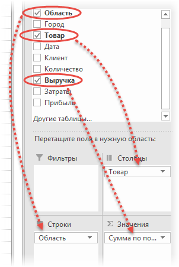В результате мы получаем настоящую сводную таблицу.
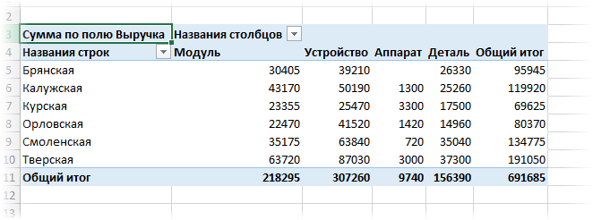На ее построение потребовалось буквально 5-10 секунд.
Работа со сводными таблицами в Excel
Изменить существующую сводную таблицу также легко. Посмотрим, как пожелания директора легко воплощаются в реальность.
Заменим выручку на прибыль.
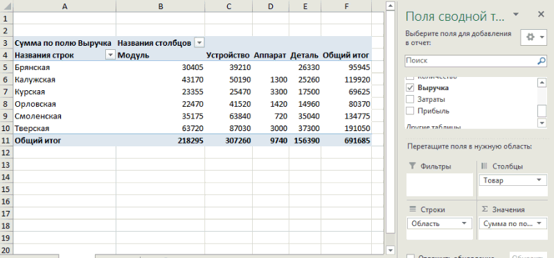Товары и области меняются местами также перетягиванием мыши.
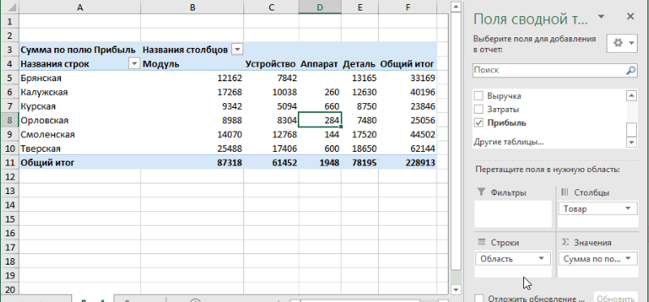Для фильтрации сводных таблиц есть несколько инструментов. В данном случае просто поместим поле «Менеджер» в область фильтров.
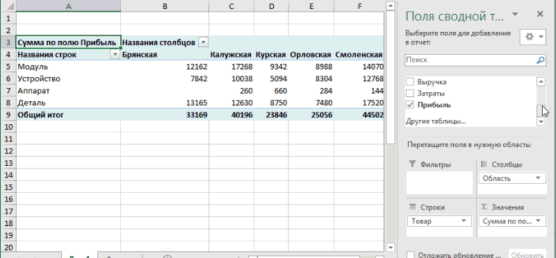На все про все ушло несколько секунд. Вот, как работать со сводными таблицами. Конечно, не все задачи столь тривиальные. Бывают и такие, что необходимо использовать более замысловатый способ агрегации, добавлять вычисляемые поля, условное форматирование и т.д. Но об этом в другой раз.
Источник данных сводной таблицы Excel
Для успешной работы со сводными таблицами исходные данные должны отвечать ряду требований. Обязательным условием является наличие названий над каждым полем (столбцом), по которым эти поля будут идентифицироваться. Теперь полезные советы.
- Лучший формат для данных – это Таблица Excel. Она хороша тем, что у каждого поля есть наименование и при добавлении новых строк они автоматически включаются в сводную таблицу.
- Избегайте повторения групп в виде столбцов. Например, все даты должны находиться в одном поле, а не разбиты по месяцам в отдельных столбцах.
- Уберите пропуски и пустые ячейки иначе данная строка может выпасть из анализа.
- Применяйте правильное форматирование к полям. Числа должны быть в числовом формате, даты должны быть датой. Иначе возникнут проблемы при группировке и математической обработке. Но здесь эксель вам поможет, т.к. сам неплохо определяет формат данных.
В целом требований немного, но их следует знать.
Обновление данных в сводной таблице Excel
Если внести изменения в источник (например, добавить новые строки), сводная таблица не изменится, пока вы ее не обновите через правую кнопку мыши
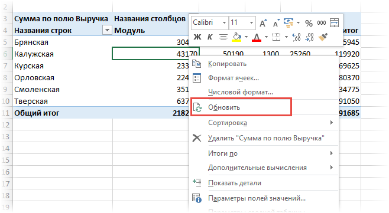или через команду во вкладке Данные – Обновить все .
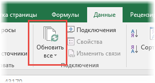Так сделано специально из-за того, что сводная таблица занимает много места в оперативной памяти. Чтобы расходовать ресурсы компьютера более экономно, работа идет не напрямую с источником, а с кэшем, где находится моментальный снимок исходных данных.
Зная, как делать сводные таблицы в Excel даже на таком базовом уровне, вы сможете в разы увеличить скорость и качество обработки больших массивов данных.